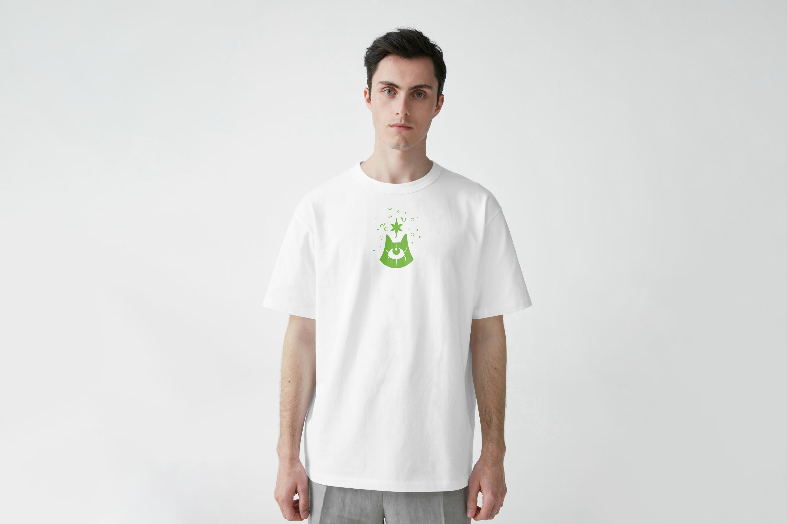
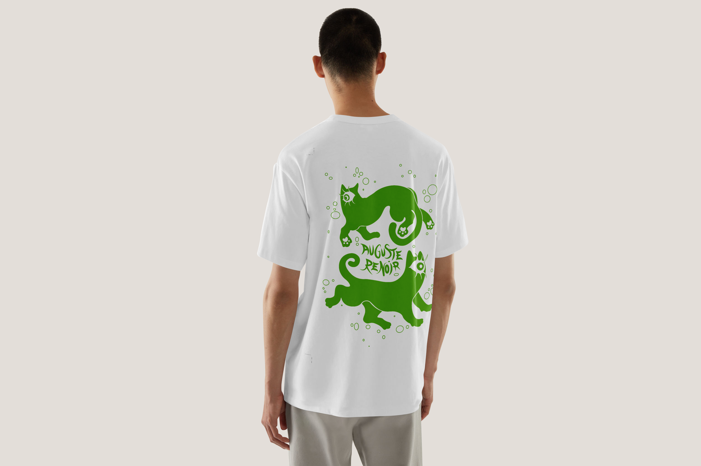
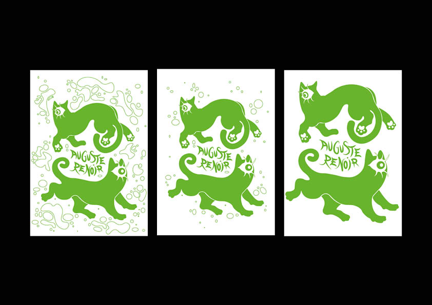
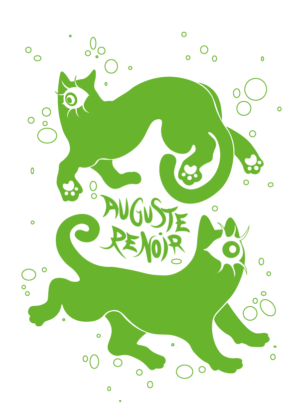
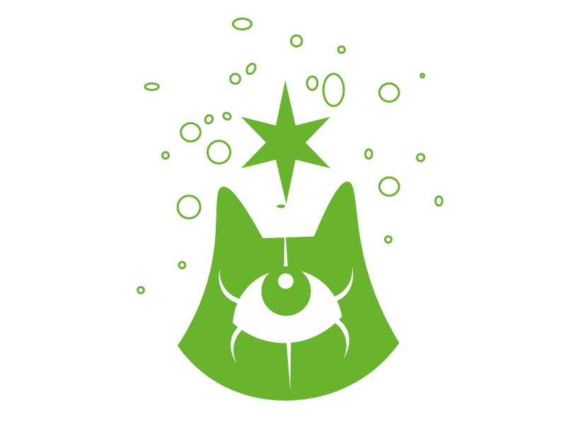
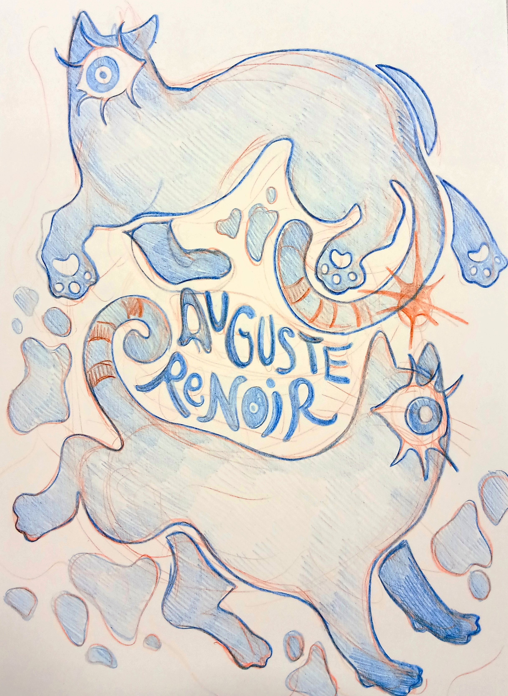

-VECTORIEL-
Tribute to Orléans
December 2022 to May 2023
A collaborative project realised with 5 students.
The trompe l'oeil fresco is designed to look like a window in the room overlooking the Pont Royal, close to the establishment. The aim was to bring together a variety of places and emblematic elements of the city on a single surface.





